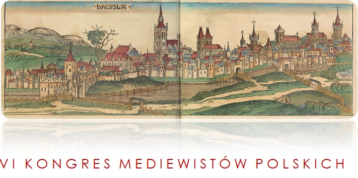

VI Kongres Mediewistów Polskich
Wrocław, 20–22 września 2018
Wielce Szanowni Państwo,

Kongresy Mediewistów Polskich stanowią najważniejsze i najliczniejsze spotkania badaczy średniowiecza w Polsce. Inicjatywę ich organizacji wysuwa Stały Komitet Mediewistów Polskich (SKMP), współpracując w realizacji tego zadania z najważniejszymi i najprężniej działającymi ośrodkami akademickimi w kraju, goszczącymi kolejne spotkania: w Toruniu (2002), w Lublinie (2005), w Łodzi (2008), w Poznaniu (2011) i w Rzeszowie (2015). Obecnie czas na Wrocław!
Uprzejmie informuję, że od lutego do kwietnia 2018 r. zaplanowano przyjmowanie zgłoszeń uczestnictwa w Kongresie, które dokonywać się będzie za pomocą niniejszej strony internetowej. Wówczas też zostaną uaktywnione na niej odpowiednie moduły. Obecnie strona dostarcza jedynie podstawowych informacji o planowanej imprezie.
II. Obecność wieków średnich w dzisiejszej kulturze i życiu społecznym (m.in. miejsca pamięci, wielkie wydarzenia i rocznice, mediewalizm); III. Żywotność badań (m.in. rozwój metod badawczych i ich interdyscyplinarność – np. cyfryzacja, LIDAR, zastosowanie genetyki; poszerzanie bazy źródłowej, zwłaszcza archeologicznej).
Każda z tych imprez zgromadziła i w przyszłości ma gromadzić przedstawicieli wielu dyscyplin (m.in. historia, archeologia, historia sztuki, filozofia, filologie), w tym gości zagranicznych, w założeniu mając na celu promowanie ich współpracy oraz realizowanie postulatu interdyscyplinarności badań. Istotne znaczenie ma też obecność reprezentantów nauk ścisłych i przyrodniczych współpracujących z mediewistami.
Już natomiast rozpoczęło się zgłaszanie propozycji sekcji, w ramach których prowadzone będą obrady kongresowe. Termin składania tych ofert upływa 22 lutego 2018 r. Wówczas komitet organizacyjny podejmie decyzje o ostatecznym kształcie programu obrad. Tematykę poszczególnych sekcji prosimy ująć w trzech zasadniczych obszarach:
Istotne znaczenie w podjętej refleksji winno mieć nie tylko podejście afirmatywne, ale też spojrzenie krytyczne. W programie Kongresu zaplanowane są też spotkania warsztatowe (m.in. archeologiczne, archiwalne i kodykologiczne).
W imieniu Organizatorów VI Kongresu Mediewistów Polskich – Stałego Komitetu Mediewistów Polskich, Uniwersytetu Wrocławskiego, Ośrodka Badań nad Kulturą Późnego Antyku i Wczesnego Średniowiecza IAE PAN we Wrocławiu – kieruję do Państwa serdeczne zaproszenie do wzięcia udziału w tej zaplanowanej na 20–22 września przyszłego roku imprezie oraz włączenie się w kształtowanie jej programu w ramach sekcji.
I. Średniowieczne fundamenty cywilizacji i kultury europejskiej w kontekście światowym (m.in. strategie badań nad kształtowaniem Europy, znaczenie kontaktów międzykulturowych w tym procesie, wkład epoki warunkujący kształt poszczególnych dziedzin cywilizacji i kultury światowej w kolejnych stuleciach aż do dziś);
W zgłoszeniu sekcji należy podać: tytuł, lakoniczny opis merytoryczny (najlepiej do 1600 znaków), kierownika (preferowane osoby ze stopniem dra hab.) oraz listę referatów bądź komunikatów. Planowany czas pracy jednej sekcji nie powinien przekroczyć dwóch posiedzeń obejmujących łącznie 5 godzin obrad, a wypadku jednego posiedzenia 3 godzin. Zgłoszenia proszę kierować na adres mailowy: stanislaw.rosik@uwr.edu.pl.
Z serdecznym zaproszeniem do Wrocławia, mocą pozdrowień i wyrazami szacunku!
Stanisław Rosik
Przewodniczący SKMP
Wrocław, 22.12.2017
RADOSNYCH ŚWIĄT BOŻEGO NARODZENIA! SZCZĘŚCIA I POMYŚLNOŚCI W NOWYM ROKU!
FELICEM DIEM NATIVITATIS! ANNUM NOVUM FAUSTUM FELICEM!
Kontakt
Wszelkich informacji udzielamy pod adresem mailowym kontakt@vikmp.pl